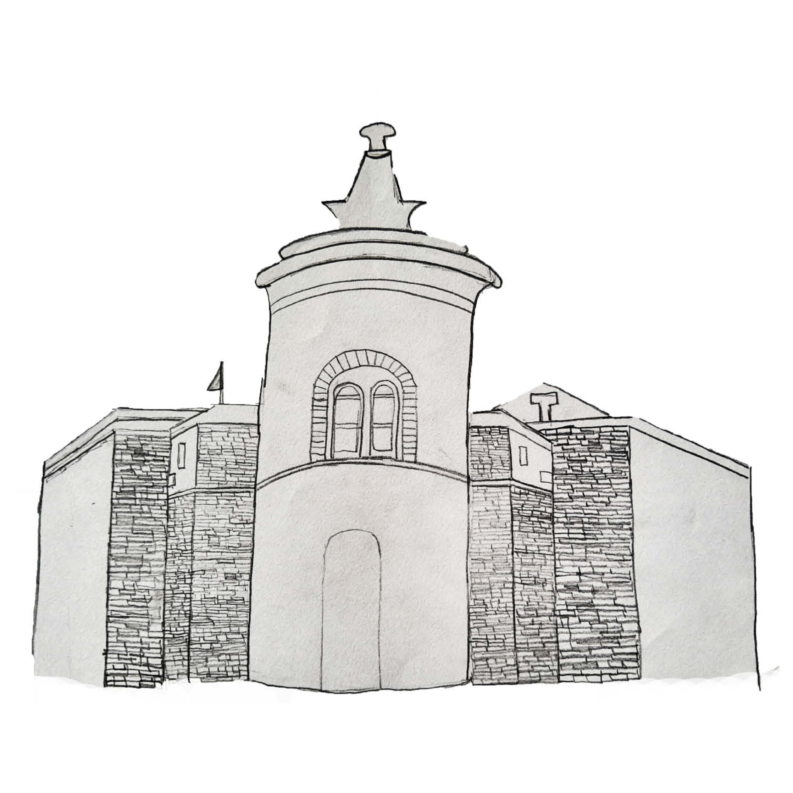
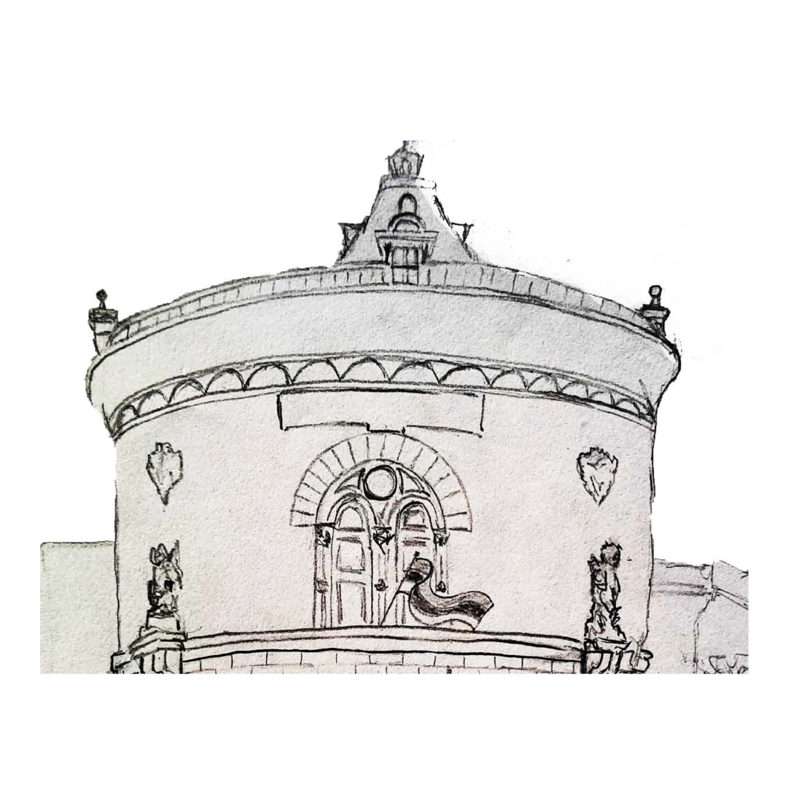
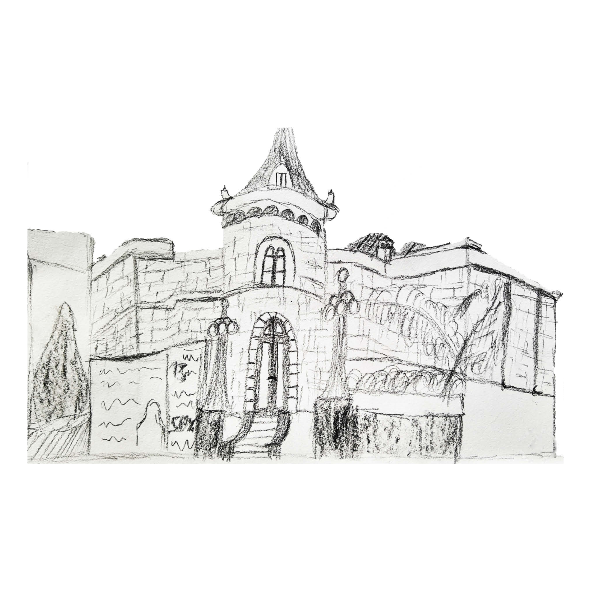
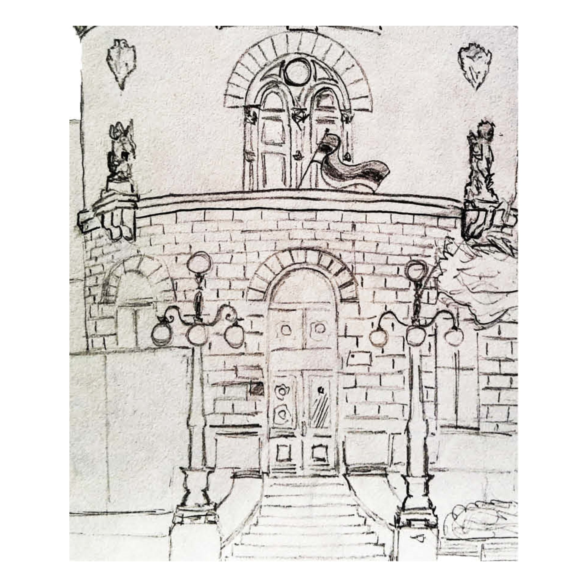
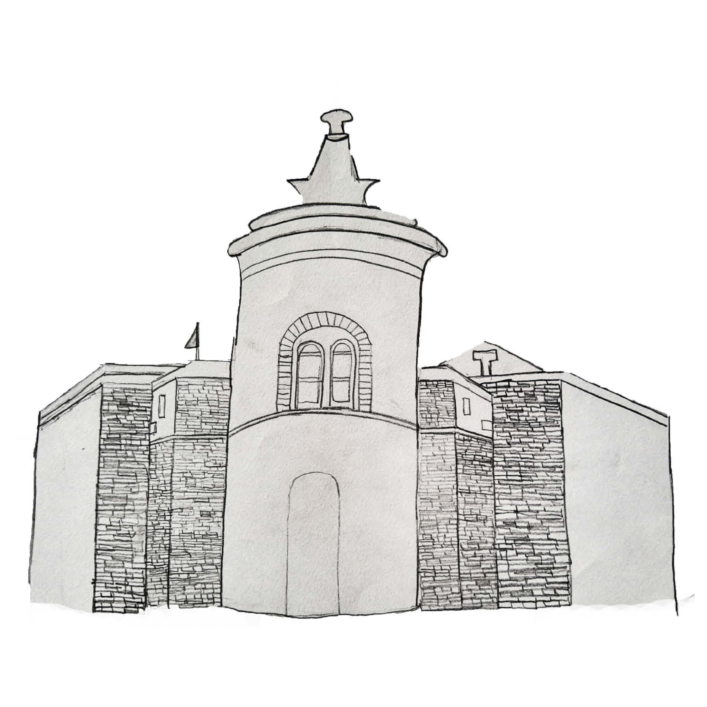
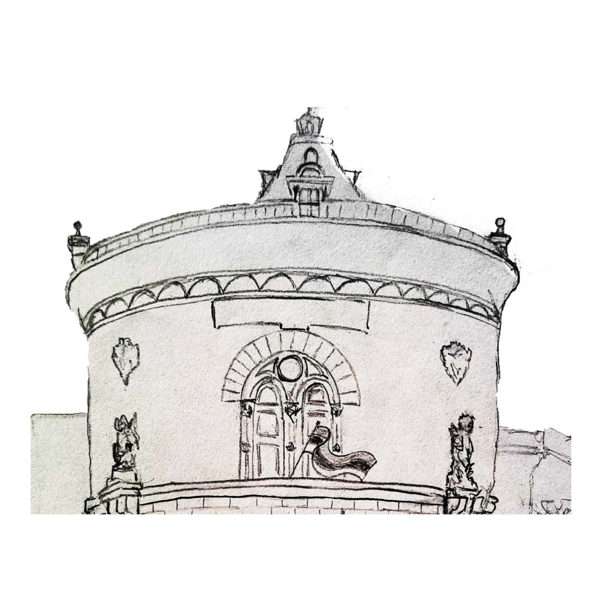
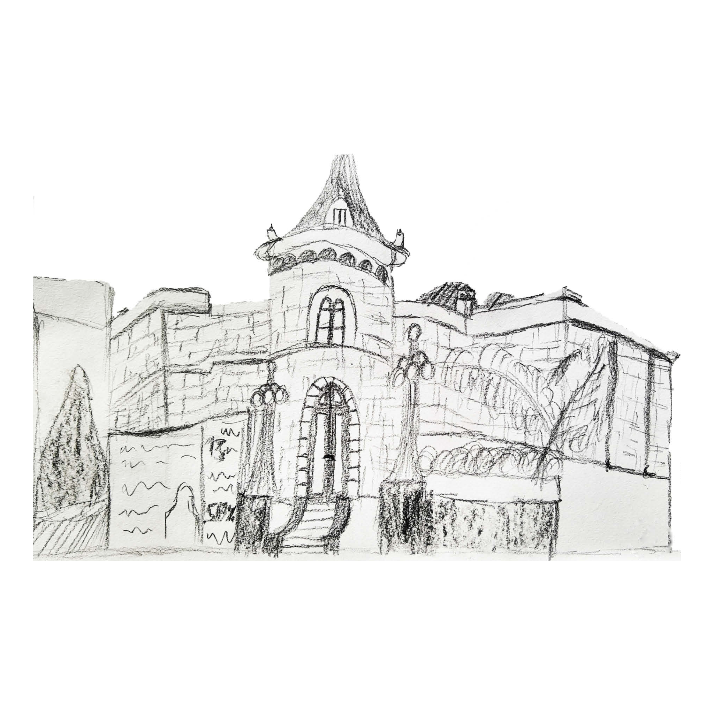
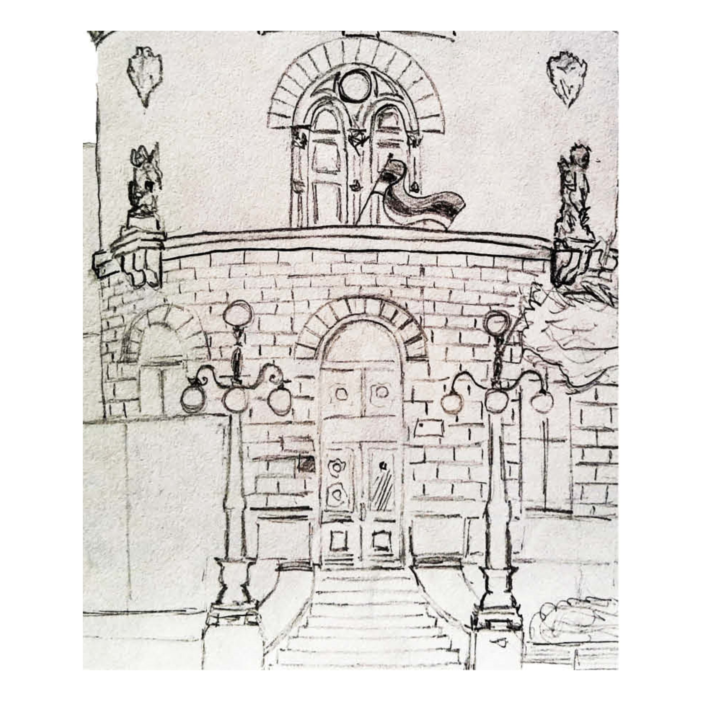

СТАРА ЖЕЛЕЗНИЧКА СТАНИЦА
Први воз са ове станице кренуо је ка Земуну 20. августа 1884. године уз све дворске почасти. У част поласка првог воза са ове станице, одржан је банкет на ком је присуствовало више од две стотине званица из целе Европе. Тада су путници били краљ Милан, краљица Наталија и престолонаследник Александар Обреновић. Свечаном отварању присуствовало је преко 200 државних званичника и више хиљада грађана. Три дана касније, свечано је отворена железничка пруга Београд-Ниш, а станица је окићена тробојкама и зеленилом. Замишљена је како за путнички, тако и за теретни саобраћај, а оно по чему се издвајала био је њен изглед, тада у складу са европским техничким и архитектонским решењима.
У то време, Европа је увелико имала више стотина хиљада километара пруге, али је Србија, према историјским подацима, била на челу по организованости и уредности, у чему је предњачила управо Београдска железничка станица. По свим подацима од 1889. године до Првог светског рата била је најпрометнија у овом делу Европе. Такође, по завршетку Другог светског рата, пошто је обновила капацитете, постала је најпрометнија у Европи. По свим важним и важећим архитектонским критеријумима последње четвртине 19. века, сама станична зграда представља репрезентативно здање, којим се на достојан начин оглашава присуство Београда на мапи Европе.О таквој намери инвеститора сведочи и ангажовање страног архитекте, који је у Бечу направио скице по којима ће план станице бити разрађен.
Међутим, његов идентитет није поуздан, али је најверованије да се ради о Вилхелму Флатиху. Београдска станица пројектована је као чеона станица, има три колосека за пријем путничких и 15 колосека за теретне возове, два покривена перона и више помоћних зграда. Станична зграда је велика, у њој има око стотину просторија. Изнад улаза је и сат, један од првих јавних часовника у Београду.

СТУДЕНТСКИ КУЛТУРНИ ЦЕНТАР
Подигнут као Зграда официрског дома у Београду, данашњи СКЦ натопљен је догађајима који су обележили историју главног града, али и државе. Некада дом камерне музике, балова и војничких забава, потом место где су планирани преврат и студентски бунт. СКЦ данас из дремежа буде рок концерти сећајући га на дане када су се, иза прелепе фасаде, поверавале највеће тајне.
Зграда официрског дома настала је из идеје Александра И Обреновића да официрима српске војске подари место где ће се окупљати, дружити и забављати на баловима и изложбама. 1895. године, а према пројектима двојице архитекта Јована Илкића и Милорада Рувидића, подигнут је Официрски дом. С обзиром на "војну" намену, одлучено је да зграда има облик замка и, у то време, била је заиста јединствена београдска грађевина.
Свечано отварање Официрског дома одиграло се 14. августа 1895. на рођендан краља Александра. У свом говору, краљ је рекао како је Официрски дом "доказ моје бриге за усавршавањем српске одбрамбене снаге. Препоручујем да се у њему развијају војничке врлине и дружељубље". У времену након Другог светског рата, "дворац у центру" постаје Дом тајне полиције. Ту су приказиване пројекције филмова са Запада и прављене прве рок игранке.
Идеја власти је била имати место где ће студентске револуционарне идеје и "против државно деловање" бити под једним кровом и лаке за контролу и наџор. Да је таквих идеја било, јасно су показали студентски протести 1968. године, после којих је Официрски дом предат на управу Београдском универзитету.Комплетна замисао дефинитиван изглед добија 3. априла 1971. када је званично основан Студентски културни центар.
Наредне године учиниле су да СКЦ постане једно од главних окупљалишта урбане омладине. Овде се развијала авангарда, рађали се аутори и образовала омладина.Зграда СКЦ данас је заштићени споменик културе, у коме се одржавају изложбе, концерти, позоришни програми... и то у пет галерија – В.И.П. Арт Галерија, Циркус галерија, Арт@Арт галерија, Галерија СКЦ и Срећна галерија. Такође, ту су и редакције за музички и позоришни програм. У локалима у приземљу објекта, смештене су књижаре и кафић, а култна манифестација, од 2003. године постао је Међународни салон стрипа.
 






